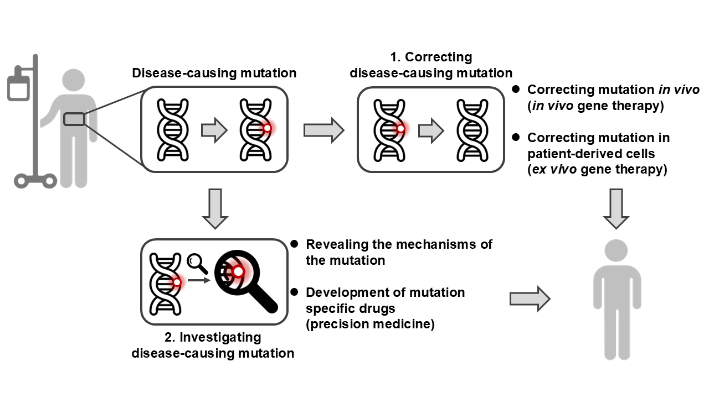
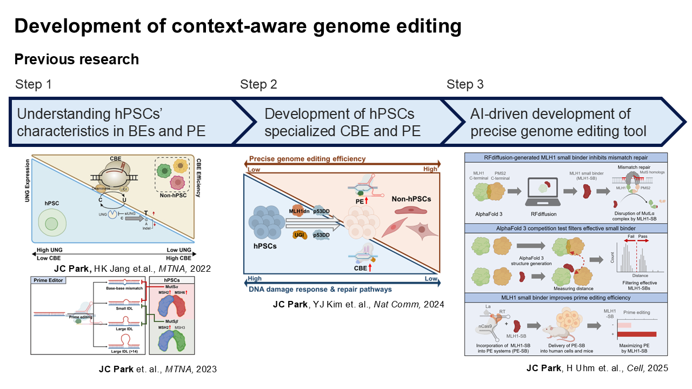
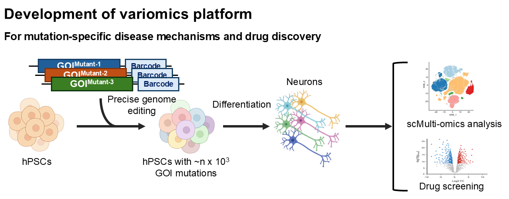

Research
How can we cure genetic diseases?

Cell & Gene Therapy
Context-aware genome editing tools — tailored to each cellular context for greater precision, efficiency, and safety.
Cell Context × Genome Editing × Artificial Intelligence
We investigate how cellular states and cell-type-specific biology shape the efficiency, precision, and outcomes of genome editing. We use generative AIs to control cellular factors that determine genome editing outcomes. AI-designed de novo proteins are integrated with next-generation editors to create genome editing systems optimized for specific cellular contexts.
Cell & Gene Therapy
We translate context-aware genome editing into therapeutic strategies. From long-DNA replacement in patient-derived iPSCs to organ-specific genome editing, we aim to develop next-generation ex vivo and in vivo therapies capable of correcting diverse disease-causing mutations.

Disease Modeling & Drug Discovery
A variomics platform built on human pluripotent stem cells — modeling genetic disease and powering mutation-specific drug discovery.
hPSC Variomics
We develop scalable genome engineering platforms that introduce large libraries of genetic variants into human pluripotent stem cells. This enables systematic and quantitative analysis of disease-associated variants in genetically controlled human models.
Mutation-Specific Drug Discovery
Single-cell multi-omics and phenotypic screening connect individual genetic variants with disease mechanisms and therapeutic responses. By resolving how different mutations within the same disease gene respond to treatment, we aim to enable mutation-specific therapeutic discovery and precision medicine.
